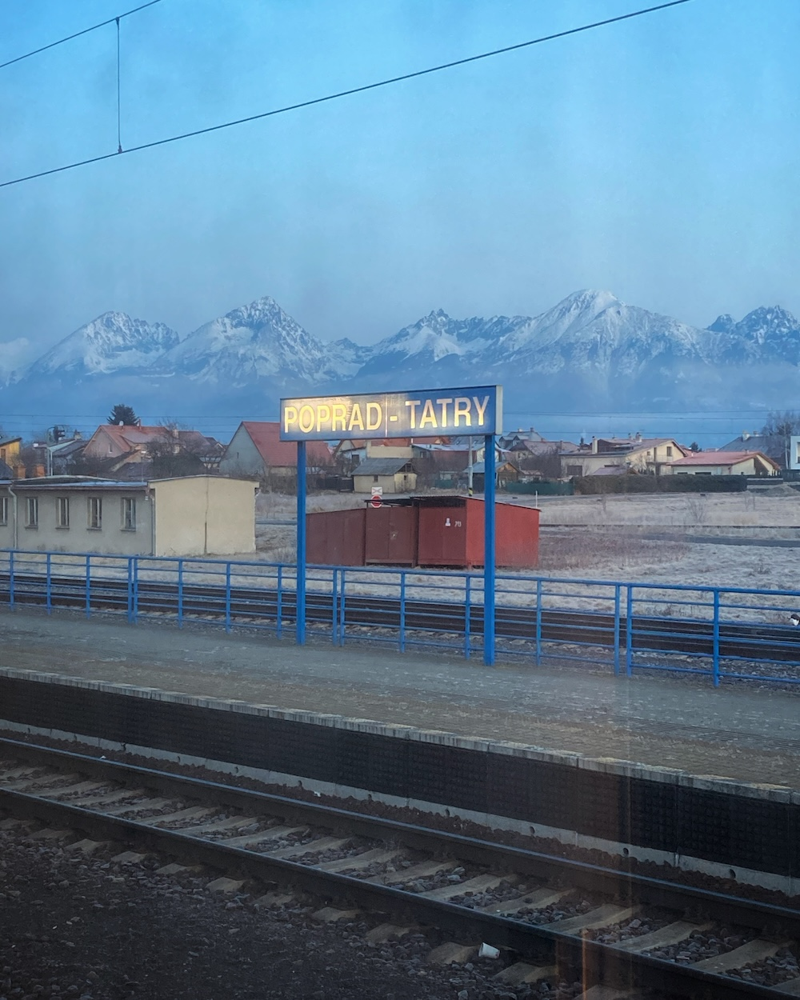

2025-02 | While you were brushing your teeth, someone ate the state department
I have limited things to say that aren’t some form of rage, this month,
and no one is obligated to hear about my rage. A warning, I guess.
In my head rent free right now is a quote from a non-anglophone US politics analyst whose work I follow:
“It’s hard to explain to non-Americans how little the American public as a whole cares about foreign policy.”
Later they added “and to be honest, it would probably be even worse if they did.” Unfortunately, I think they’re
right: over the years I’ve met so many *very* educated American colleagues who can’t find my country on a map,
so many red-blooded folks who have never been further than an all-inclusive in Cancún, who implicitly or explicitly,
often despite *meaning well*, cannot understand that America isn’t the default country. (A fun fact: Britain is a
sometimes-isolationist island that you need a passport to leave. 87% percent of Britons own a passport. Less than
half of Americans do.) People will go into the streets to celebrate the Eagles winning the Super Bowl but stay
silent as the main good things about their country get torn apart by reckless oligarchs, or the leaders of their
country sell Ukraine to Putin, with giant implications for the rest of the world, none of whom voted for your
bullshit. It isn’t enough, none of it is. (A specific, alien rage towards the smart boy commentators writing
fluffy *think pieces* about what an interesting time this is for US politics, safe in the implicit knowledge
that it will in fact never be their toddler in Donetsk (or Gaza) under the drone fire.)
I went to the talk of my acquaintance, who quit his job as high school teacher after Russia invaded Ukraine and has
been doing logistics there ever since. The contrast between him and the aforementioned think piece writers is a needle
that points true north. You can support his work
here.
You can help buy a drone here.
It's really not a new topic, but think a lot lately about my relationship to the internet.
I have no intention of leaving the internet anytime soon.
All of my key relationships are mediated through it at least in part, and in any case it’s still a fundamentally neat,
even emancipatory, thing to be connected to fellow travellers thru the ~information superhighway~. At the same time
it’s obviously not particularly good for you to doomscroll through an onslaught of awful things that you have absolutely
no agency over (In the words of my spouse, “While you were brushing your teeth, someone ate the state department.”)
Moreover it doesn’t in fact make me particularly better informed or better equipped to react to anything;
the overwhelm is part of the point.
And of course there are more subtle, more insidious ways it deforms attention and memory
and self regard & in fact the very nature of experience and all of those related things that do not bear going into here.
So I guess I’m resigned to a balancing act on that front. I am not above seeking paid help at this point: I block major apps using
Jomo, and I put my phone in a timed lockbox at work and at night, which I recommend.
(That feels somewhat pathetic to admit,
but we were not designed to have near-mandatory slot machines in our pockets.) Other parts of my current strategy paradoxically
involve more tech - you can use
html2txt to make websites into .txt files for reading on an reader,
and I have a semi-broken
old phone that barely connects to internet to listen to podcasts and český rozhlas. August Lamm is a person who has abandoned
her smartphone entirely. I like her
writing about it, and about
other things.
A new
AMOC study
and
commentary.
I have read neither in depth yet because I’ve been prioritizing
drinking coffee with people I love.
I enjoyed Sam Kriss
taking down alt lit
in a very Sam Kriss way.
I’m not sure what it would take to make literature feel genuinely
vital and necessary again. My current best plan is to set off a series
of small but loud bombs across New York such that if you mapped out the
explosions they would spell the words PLEASE CONSIDER WRITING ABOUT
SOMETHING OTHER THAN YOURSELF.
(Good grief, at ~20 I occasionally wrote earnest things for Thought Catalog,
naively unaware of the whole Thing.
In retrospect that naive unawareness was probably why the editors wanted to publish them.
But I was twenty, these people aren’t.)
(Other things Sam Kriss did on the internet recently include
informing me
-correctly-
that I am Czech.)
I s tebou vydali
cover mojí dětské ukolébavky
♥︎.
I spent the border between February and March on a night train between Czechia and Slovakia.
When I was a child my dad, who spent part of the 80s carving forged visa stamps out of
potatoes in order to go climbing in various parts of the Soviet Union (this was very much a Type of Czech Dude at the time),
took us on the sleeper train from Prague to go climb in the High Tatras.
Twenty years later, waking on rails in the predawn to strange light over the mountains
behind the Poprad-Tatry railway station remains, for me, about as good as it gets, here on this small green planet.
